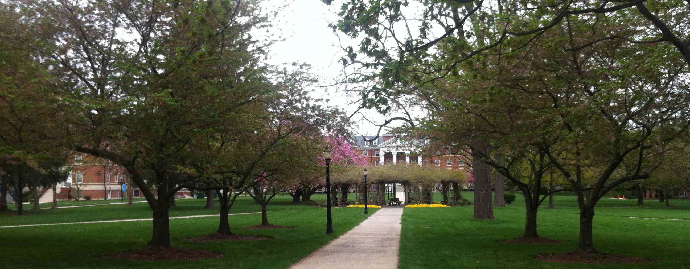

© Laurie Kiguchi
California State University Long Beach
Transfer students!
Wondering what courses you should take at a community college?
Wondering whether you should transfer to a different four-year college?
Wondering whether you should take time off?
You have lots of options! There is much you can do to explore and to prepare. It's never too early to plan for your next step.
© Laurie Kiguchi
Drexel University
Planning for a change
Transfer students have many opportunities. They also face challenges that are in some ways more complex and in other ways more straightforward than freshman applicants.
Laurie guides students to understand their reasons and goals for transferring, to identify programs and colleges that will fit their needs and preferences, and to complete effective applications. She works with the student and family to understand the academic, social, and financial aspects of the transfer process as well as the option of taking time off.
The transfer process varies among different types of four-year colleges and the admission criteria are different compared with applying to college as a freshman. Some institutions (e.g., the California State University and University of California systems) accept only junior-level transfers, with priority and transfer pipelines available for California community college students. Other colleges accept transfer students even with only a few college units.
Admission criteria focus on the college academic record and often on preparation for specific college majors at the target institution. It is important for prospective transfer students to explore potential majors and take the appropriate college courses at the home institution before applying to transfer.
Planning for transferring, whether from a California community college or another four-year institution, is best done as soon as possible. Laurie can help to develop a transfer plan as well as to implement it, depending on the needs of the student.

© Laurie Kiguchi
Hood College
The road to success is always under construction. — Lily Tomlin